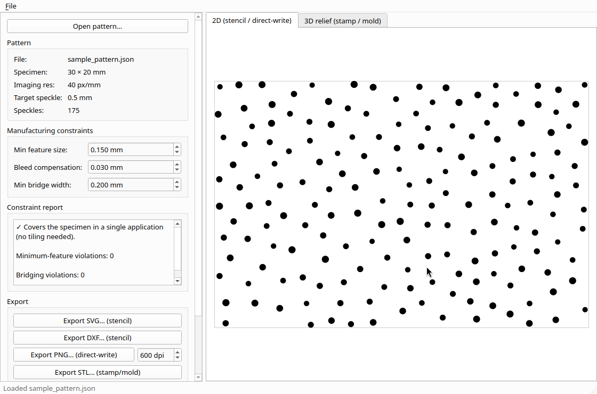
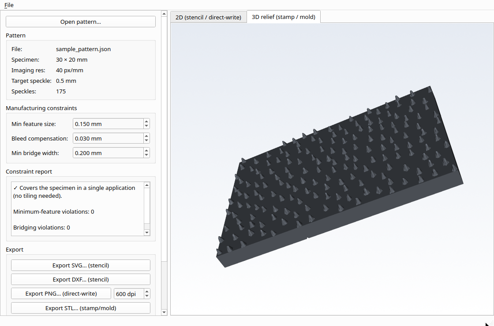

Software for making DIC speckle patterns physical: an optimized pattern in, a fabrication file out, with the manufacturing constraints already applied.
Free and open source, LGPL-2.1-or-later · Qt and VTK · sister tool to SurView DIC

A good speckle pattern is designed digitally and then has to survive being made. PatternFab is the step in between: it applies the real constraints of the process you will use, and writes the file that process needs.
What the software does, in the terms the process needs.
.svg and .dxf stencils, .png at any DPI from 50 to 4800, and .stl relief with a chosen base thickness and bump height.patternfab-core library with no dependency on interactive widgets, wrapped by a thin Qt application and a command-line driver. The library is unit-tested directly.QSvgGenerator for SVG), VTK 9 (relief mesh and STL), dime (DXF), nlohmann/json. The same Qt and VTK stack as FreeCAD, ParaView and SurView DIC.The methods themselves are published work by other people, not inventions of this project. PatternFab's contribution is the software bridge from a pattern to the file each method needs.
An STL relief, resin-printed as a stamp directly or as a mold to cast silicone from. The strongest method for medium and large speckle. FDM printing alone cannot hold fine features at a 0.4 mm nozzle, which is why the mold path exists.
Diani, Geraud, Coq et al., "Stamps for Pattern Applications for DIC or Markers Tracking", Experimental Techniques, 2026.
A PNG at the correct DPI, driving a modified 3D printer that dispenses ink through a syringe in a Poisson-disc distribution. Suited to fine speckle.
Yang, Tao, Franck, "Smart DIC Patterns via 3D Printing", Experimental Mechanics, 2021.
The same PNG, printed to water-slide transfer paper. Confirmed stable under impact loading and large strain, and the fastest method to apply.
Quino et al., "Speckle patterns for DIC in challenging scenarios", Measurement Science and Technology, 2020.
SVG or DXF for a laser cutter, with bridging checked so the cut stencil holds together. Spray through a stencil is the weakest reproducible method, with edge bleed, halo and clogging: PatternFab supports it, and says plainly that a stamp or a transfer is better where either will do.
The sample pattern that ships with the source: 175 Poisson-disc speckles over a 30 by 20 mm specimen, imaged at 40 px/mm.
The constraint report answers the three questions that decide whether a pattern can be made at all: does it cover the specimen in one application, is any feature smaller than the process can hold, and does any bridge fall below the minimum width.
Set the constraints in millimetres for your own process. The report and the previews follow immediately, before anything is written.

The same pattern as a relief, with the base thickness and bump height you will print, rendered in the window through VTK rather than left to the slicer to reveal.
This is the geometry that goes into the STL, not an impression of it.
PatternFab builds from source on Ubuntu 26.04 and equivalents.
sudo apt install libvtk9-dev libvtk9-qt-dev \
qt6-base-dev qt6-base-dev-tools qt6-svg-dev \
libdime-dev nlohmann-json3-dev
git clone https://github.com/katalystnord/patternfab.git
cd patternfab
cmake -S . -B build -G Ninja -DCMAKE_BUILD_TYPE=Release
cmake --build build
./build/gui/patternfab-gui examples/sample_pattern.json
The last line opens the sample pattern already loaded, which is the
screenshot above. The window needs a VTK whose GUISupportQt
is built against Qt6; Ubuntu 24.04 and older ship one built against Qt5,
and one process cannot hold both. Build with
-DPATTERNFAB_BUILD_GUI=OFF there, and the library, the
command-line driver and the whole test suite still build and run.
Three tools on the same bench, in the same ecosystem, under open licences.
Speckle images in, displacement and strain fields out, with every point's reliability reported and full provenance carried into ParaView and FreeCAD.
SurView DICAn optimized pattern into a stamp, a stencil, a decal or a direct-write file, with the manufacturing constraints applied.
This tool.
Data back out of the charts in a paper. Free, offline and cross-platform.
plottracer.comPatternFab is free software under the GNU Lesser General Public License, version 2.1 or later, the same licence FreeCAD uses in the same ecosystem.
Built on Qt and VTK, with dime for DXF and nlohmann/json.
The fabrication methods are the published work of the authors cited above. PatternFab implements the software bridge to them and claims none of them.